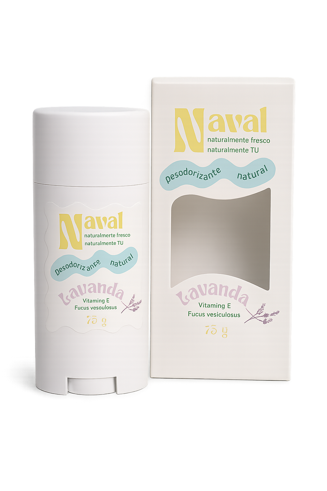
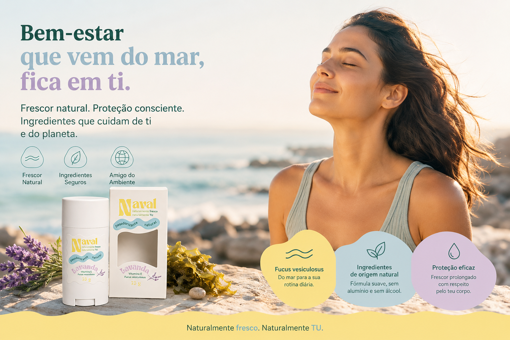

O desodorizante natural da Naval une investigação e natureza para proteger a pele das crianças — com a alga Fucus vesiculosus no coração da fórmula.

A Naval procura diferenciar-se através da investigação e desenvolvimento de formulações inovadoras, valorizando os recursos naturais.
Nascida na Prova de Aptidão Profissional de Biotecnologia Aplicada, a Naval traz rigor científico à cosmética infantil — investigação, desenvolvimento e formulações pensadas ao detalhe.
Ingredientes de origem natural, valorização dos recursos marinhos e princípios de sustentabilidade em cada etapa. Uma alternativa segura, natural e responsável.
Uma alga marinha rica em compostos bioativos e antioxidantes, ainda pouco explorada em desodorizantes destinados ao público infantil. É o principal elemento diferenciador da Naval — e a porta para uma nova perspetiva na cosmética infantil.
Selecionados pelas suas propriedades hidratantes, protetoras e suavizantes.
A Naval nasceu da vontade de criar uma alternativa natural, segura e inovadora para os cuidados de higiene infantil, desenvolvida no Curso de Biotecnologia Aplicada do Colégio de São Gonçalo de Amarante.
O primeiro passo desta missão materializou-se num desodorizante natural para crianças, concebido para responder a uma necessidade crescente identificada por pais, educadores e profissionais de saúde.

Conhece o desodorizante natural infantil da Naval — Lavanda, Vitamina E e Fucus vesiculosus. 75 g.
Contactar a NavalPede disponibilidade, encomenda ou solicita mais informação sobre o desodorizante natural infantil Naval Lavanda.